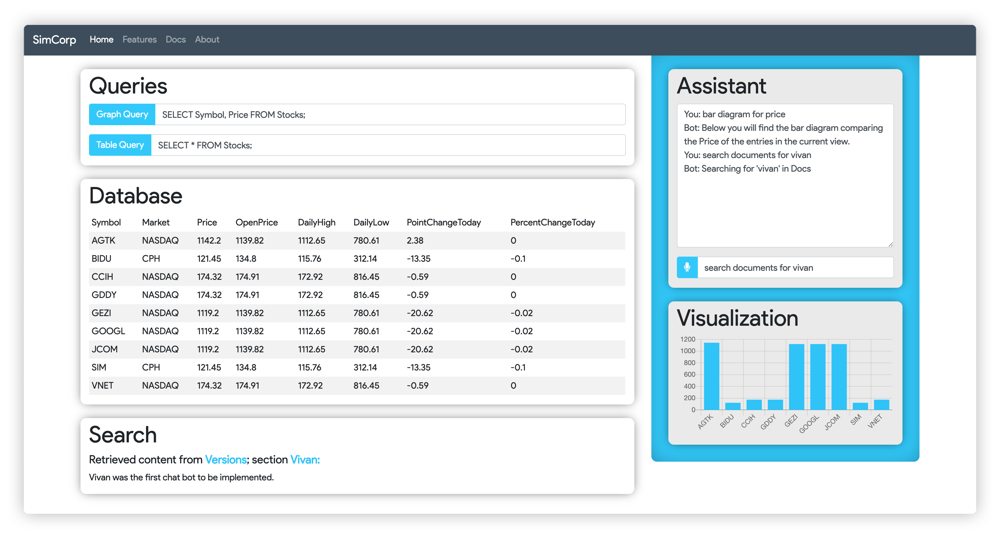

Versions
Vito was not always as shiny and pretty as we know she is today. Before she was birthed, numerous other imlplementations were carrying the Vi-name! There exists three major Vi-versions; Vivan, Vivan Node, and Vito; The naming convention is no accident; Vivan represents version one or V1, Vivan Node reporesents the migration of Vivan to a Node.js, and finally Vito represents version 2 or V2.
Vivan
Vivan was the initial implementation of the chat bot. It was implemeneted through basic HTML and Javacript, with all computations taking place on the front-end. It met some basic product requirements and provided a solid foundation for the development of Vivan Node.
Vivan Node
Vivan Node is less of a complete version and more a stepping stone from Vivan to Vito. There were many funcionalities planned for the implementation of Vito, but a better architecture was desired to improve preformance and scalability. A better architecture also made it easier to design and plan new features for Vito. To achieve this Vivan was migrated, with the same basic funcionalities, to a node.js express app.
Vito
Vito is the current, supported version of the chat bot. It was built directly off of Vivan Node, extending existing features as well as adding a slew of new ones.
Website
Provided below is an image of the virtual assistant home page. Below that are descriptions of the various page elements.
Assistant
The assistant element of the page is located in the top right. It provides a simple input field where the user can type textual input to be sent to the DialogFlow Bot. This text, as well as the response from the bot are logged in the text field above. There is also a buttons tied to the input field that enables text to speech.
Queries
The query element is located in the top left. It consists of two sepereate input fields, for graph and table queries respectively. Queries can be typed manually but the assistant can also be used to enact graph and table queries.
Database
The database element is located below the query element, and displays table query results. It is also possible to preform grid operations through the assistant, that will live update in database element.
Document Search
The search element is located below the database element, and is responsible for displaying search results from this documentation. Searchs are requested through the assistant, and the response is formatted and served into this element.
Visualization
The visualization element is located below the assistant element. It display graphs upon request. Like the databse element, these requests can be entered as SQL queries directly in the query element, but can also be enacted through dialog with the assistant.
Features
Vito ships chalk-full of a healthy set of features. Many of them were originally introduced in Vivan, but there are also come that are completely new! The following provides an overview of Vitos most significant features.
Grid Operations & Database Integration
Grid operations were part of the basic set of requirements met by Vivan. Upon development of Vito, some more advanced grid operations were added. Here is a list of all the grid operations currently supported by Vito:
- Sorting
- Grouping
- Showing/hiding columns
- Reversing the table order
- Table search
Furthermore, Vito is integrated with a remote SQL server which is used to store all of the data that can be shown in the graph. In fact, all the grid operations are actually implemented as different SQL queries. When a user specifies a grouping, a valid SQL query is formed where the data will be ordered accordingly.
Natural Language Processing
Vito is capable of natural language processing. This is a requirement for the ability to interact with the assisant through natural language, be that typed or spoken. Dialogflow, the host of the assistant, uses machine learning techniques coupled with developer defined training phrases to be able to resolve an intent from any given input.
Document Search
It is possible to search Vitos documentation pages via the assistant. Search strings are matched to either document titles, headers, or body content; Each with respective weights, and the results are displayed on the homepage.
Dependencies
Vito depends on various third party products and frameworks. Without these dependencies, Vito would not be alive and kicing today! These dependecies, together with the function they serve, are briefly mentioned in the following sections.
DialogFLow
DialogFlow is a Google product used for creating chat bots. It is with DialogFLow, that Vito has been built and trained.
Node.js
Node.js is a framework for back-end web architecture. It allows for rapid, asynchronous, server-side computations, that allow Vito to respond and enact actions more quickly and efficiently. Node.js was first introduted in Vivan Node, hence the name.
Chart.js
Chart.js is a lightweight framework for generating charts and diagrams in HTML and Javascript. It is used to make Vitos visualizations
Fuse.js
Fuse.js is another lightweight framework that provides fuzzy matching capabilities. It currently serves as the backbone for document search.